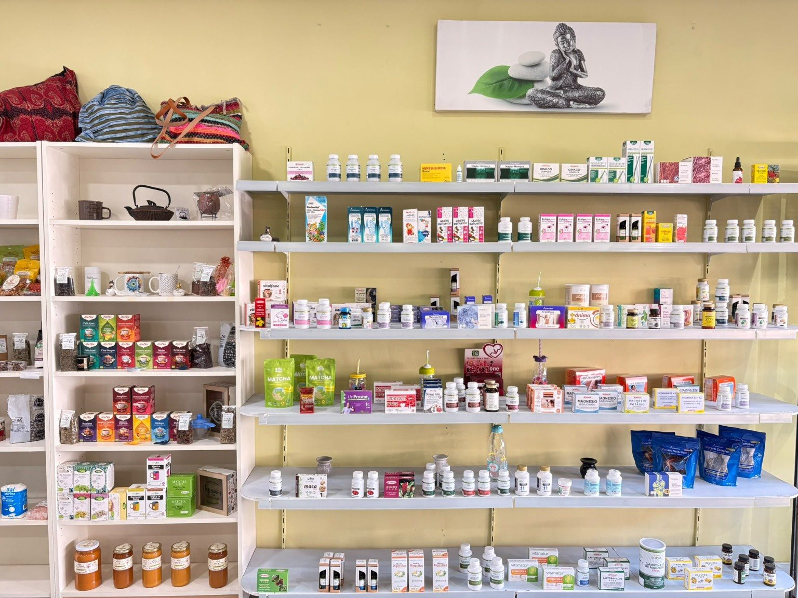
Herbolario y bienestar
Productos naturales, plantas, complementos y propuestas para tu día a día.
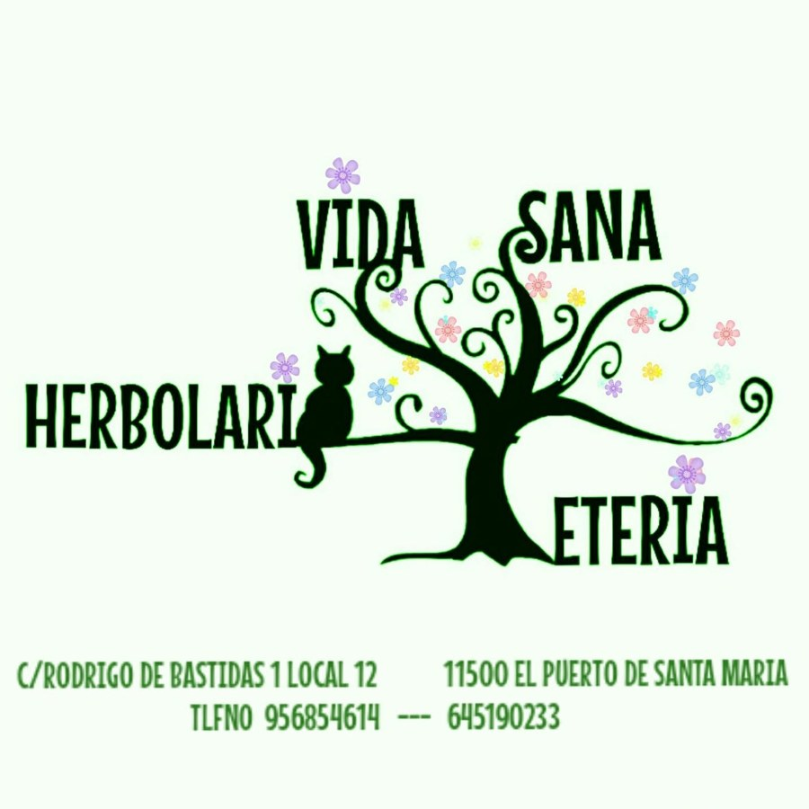
Vida SanaHerbolario · Tetería · Esoterismo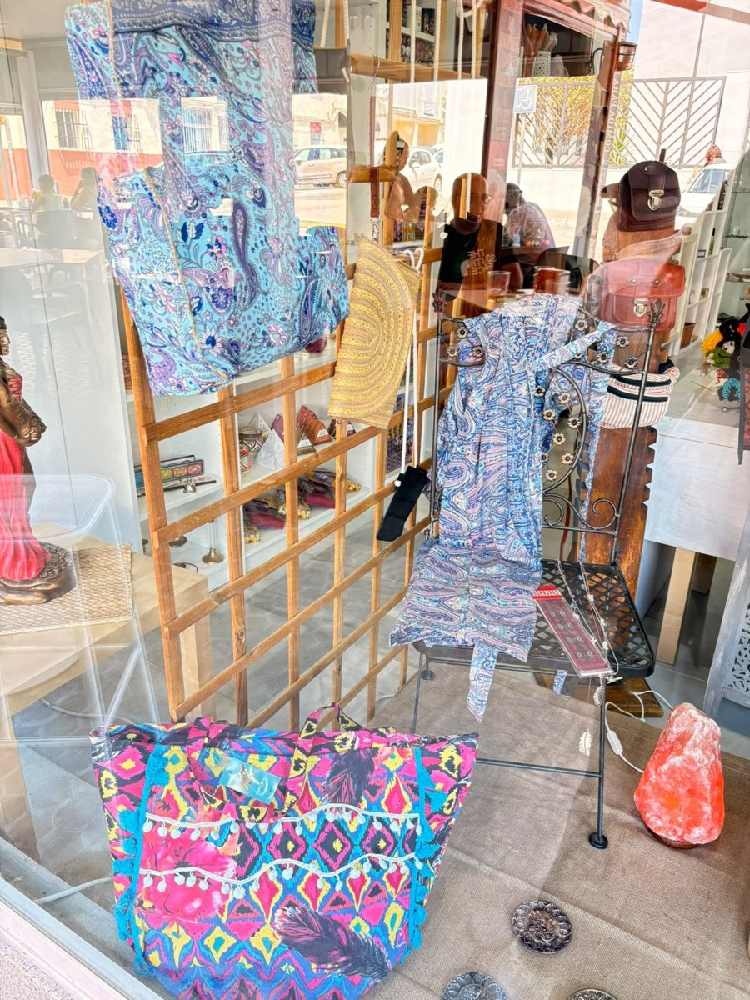
Bienestar, tradición, esoterismo y un mundo por descubrir.
MUCHO MÁS QUE UN HERBOLARIO
En Vida Sana encontrarás productos naturales, tés e infusiones, minerales, inciensos, velas, artículos esotéricos, complementos y regalos especiales en un establecimiento con historia en El Puerto de Santa María.

Productos naturales, plantas, complementos y propuestas para tu día a día.
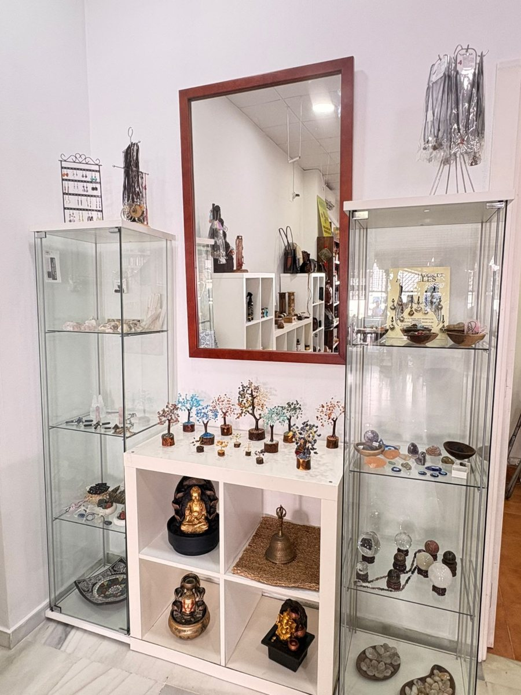
Minerales, velas, inciensos, amuletos, figuras y objetos con personalidad.
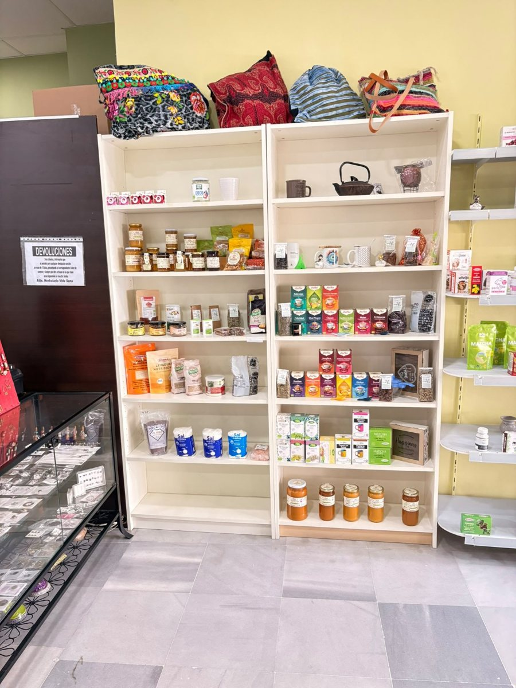
Aromas, sabores y una selección para disfrutar con calma.
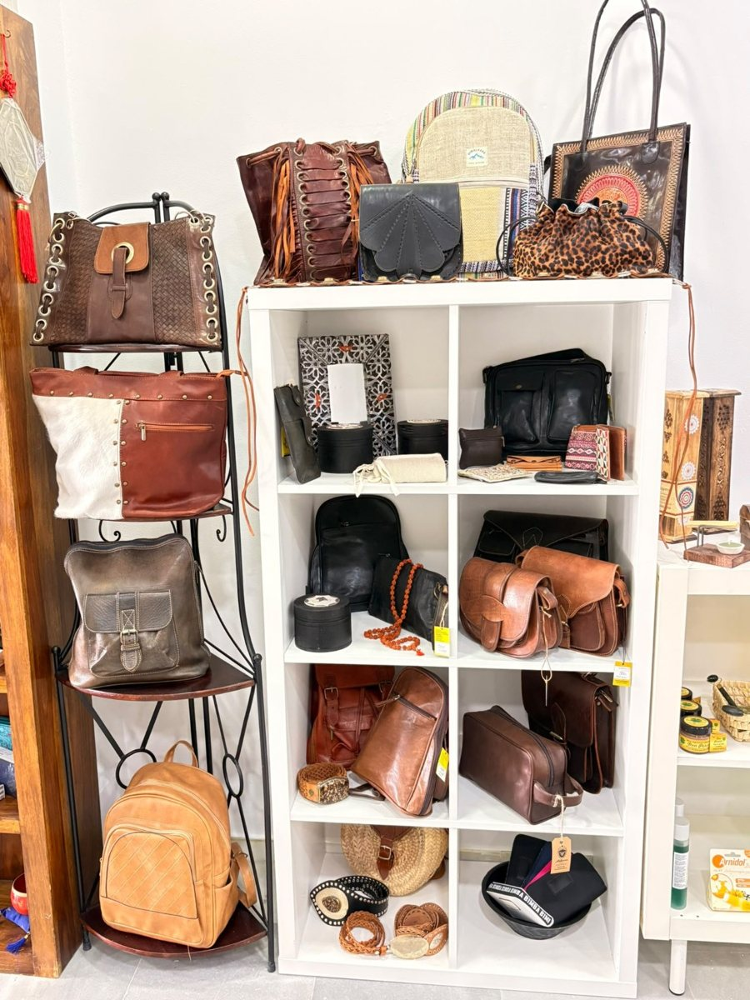
Bolsos, bisutería, decoración y detalles diferentes para regalar o regalarte.
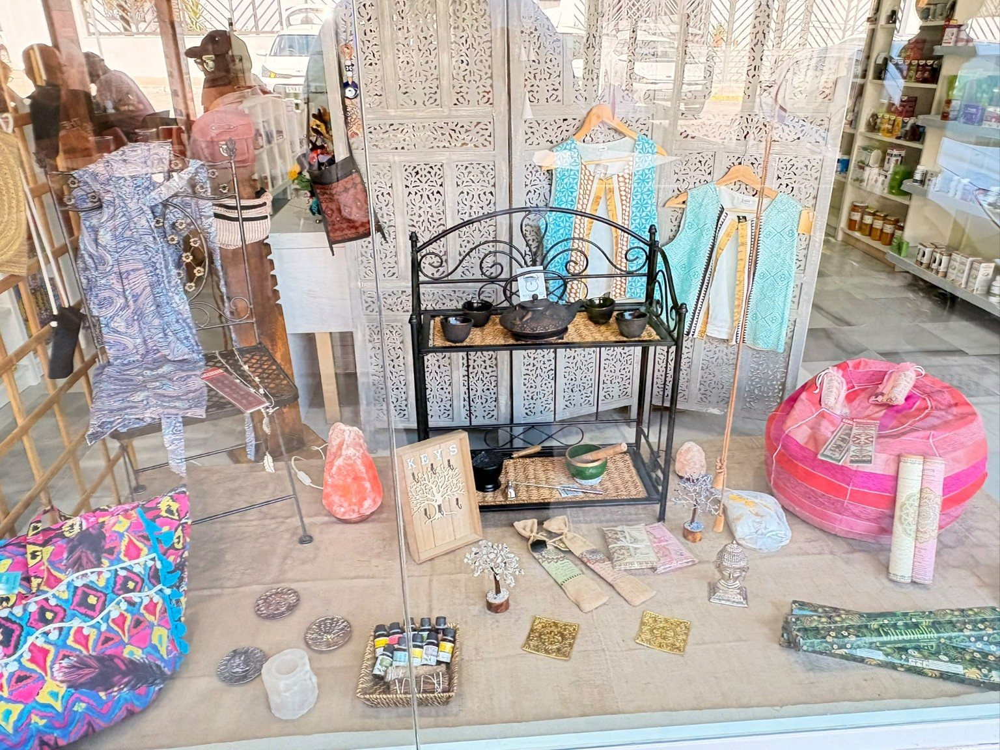
UN ESPACIO PARA EL MUNDO ESOTÉRICO
El esoterismo forma parte de la identidad de Vida Sana. En tienda puedes encontrar minerales y piedras, inciensos, velas, amuletos, atrapasueños, figuras, cuencos y otros artículos para quienes buscan algo especial.
¿Buscas un artículo concreto? Pregúntanos por WhatsApp y te diremos si lo tenemos disponible.
Consultar disponibilidadUNA NUEVA ETAPA
Vida Sana comienza una nueva etapa manteniendo la esencia de un establecimiento conocido desde hace años en El Puerto de Santa María: cercanía, bienestar y una selección muy especial de productos.
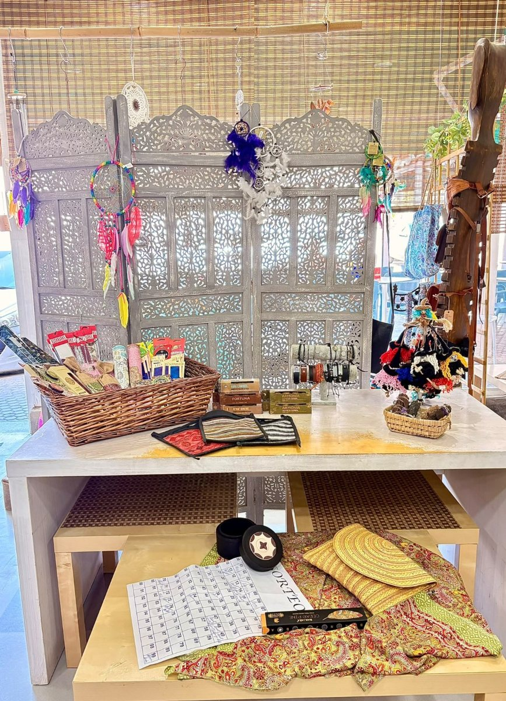
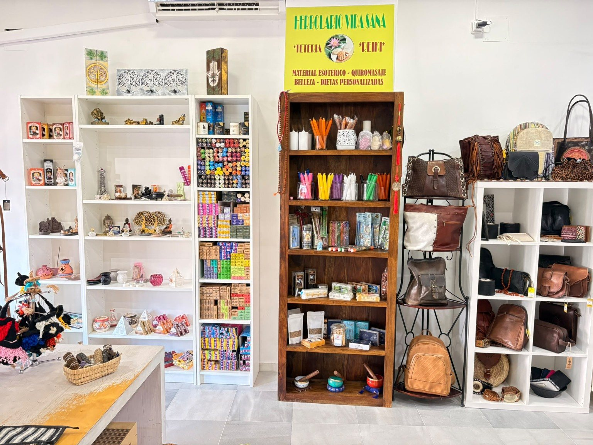
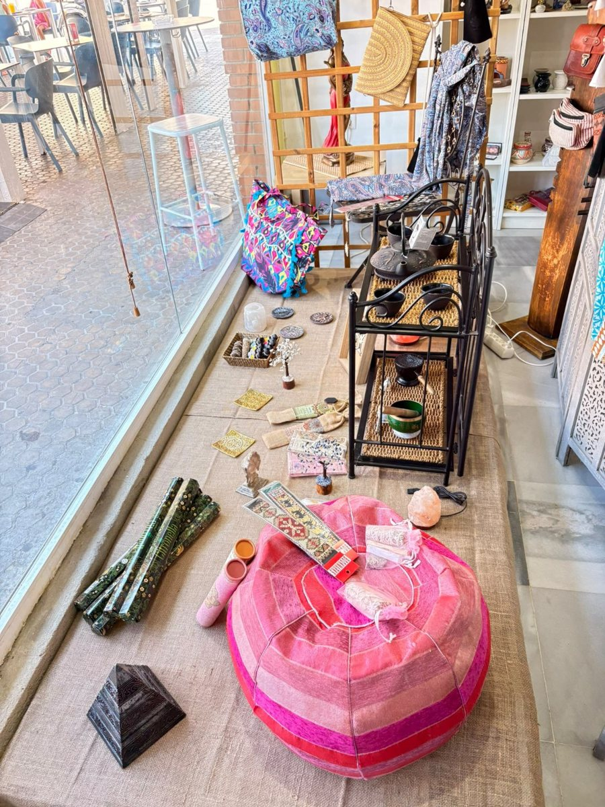
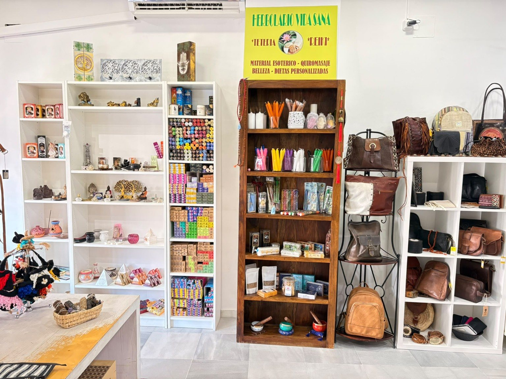
CONTACTO
C/ Rodrigo de Bastidas, 1 · Local 12
11500 El Puerto de Santa María, Cádiz